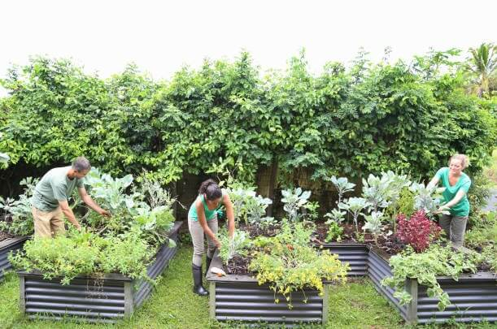

Objetivo
Incentivar a criação de espaços verdes urbanos e a implementação de soluções de sustentabilidade em ambientes citadinos, promovendo a qualidade de vida e a biodiversidade local.
Descrição
O "Cidades Verdes, Vidas Sustentáveis" apoia comunidades urbanas na criação de parques, jardins comunitários e telhados verdes. Oferecemos consultoria, materiais e workshops sobre jardinagem urbana, captação de água da chuva e energias renováveis em pequena escala, transformando áreas cinzentas em oásis de sustentabilidade.
Impacto Esperado
- Melhoria da qualidade do ar e do microclima urbano.
- Aumento da biodiversidade local.
- Promoção da saúde e bem-estar dos cidadãos.
- Fortalecimento da resiliência urbana.
